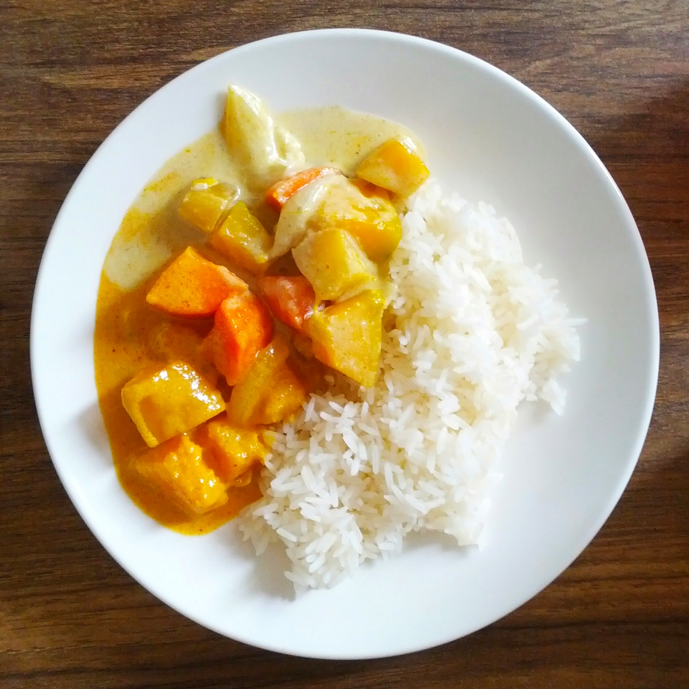

Yellow Curry

Description
Yellow curry is a mild, creamy Thai dish known for its bright golden
color and savory-sweet flavor profile. It uses a high concentration of
dried spices like turmeric and cumin, reflecting a historical Indian
influence.
Ingredients
- Chicken
- Potatoes
- Carrots
- Onions
- Yellow curry paste
- Garlic
- Coconut Milk
Steps
- Saute onions and garlic
- Cook curry paste until fragrant
- Sear chicken to get some color
- Add coconut milk and potatoes
- Simmer until everything is cooked through
- Serve with jasmine rice
Home